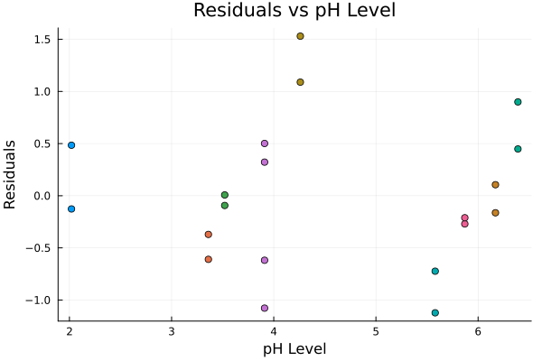
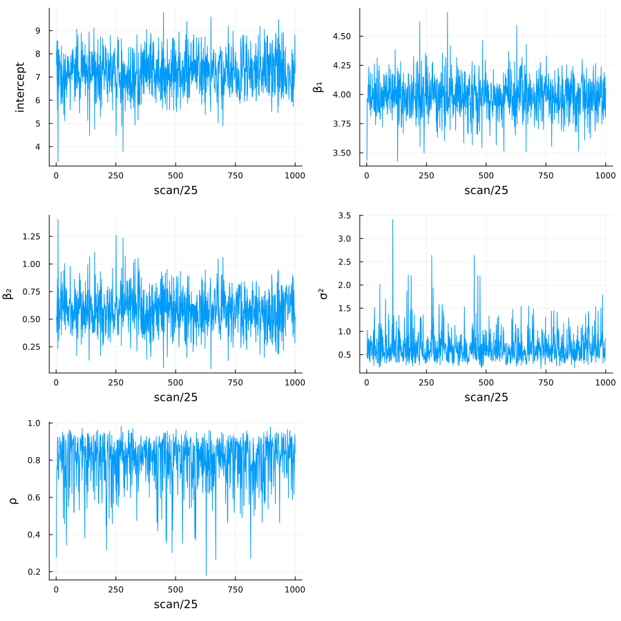
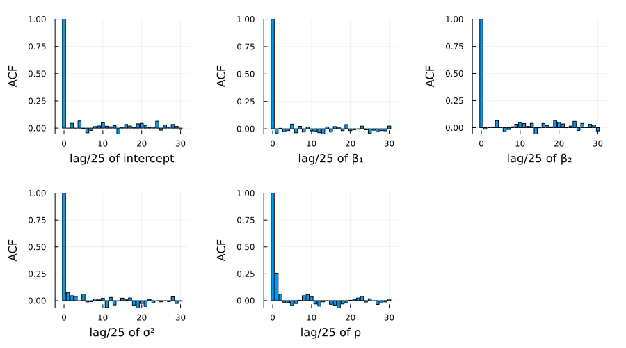
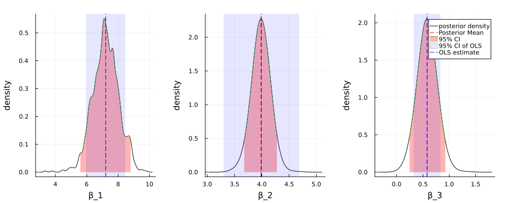

Exercise 10.3 Solution Example - Hoff, A First Course in Bayesian Statistical Methods
標準ベイズ統計学 演習問題 10.3 解答例
a)
Answer
import Pkg; Pkg.add(url="https://github.com/KaoruBB/BayesPlots.jl")
data = readdlm("Exercises/tplant.dat")
20×3 Matrix{Float64}:
11.8 0.0 6.39
15.34 1.0 6.39
9.31 0.0 5.58
13.7 1.0 5.58
11.2 0.0 4.26
14.75 1.0 4.26
10.33 0.0 5.87
14.38 1.0 5.87
9.79 0.0 3.91
13.96 1.0 3.91
8.39 0.0 3.91
12.84 1.0 3.91
10.61 0.0 6.17
14.87 1.0 6.17
8.54 0.0 3.36
12.77 1.0 3.36
9.25 0.0 3.52
13.14 1.0 3.52
8.86 0.0 2.02
12.24 1.0 2.02
# first column: plant height
# second column: measurement period
# third column: pH level
y = data[:, 1]
X = data[:, 2]
# add intercept
X = hcat(ones(length(X)), X)
df = DataFrame(
height = y,
time = X[:, 2],
pH = data[:, 3]
)
lmfit = lm(@formula(height ~ time + pH), df)
"StatsModels.TableRegressionModel{LinearModel{GLM.LmResp{Vector{Float64}}, GLM.DensePredChol{Float64, CholeskyPivoted{Float64, Matrix{Float64}, Vector{Int64}}}}, Matrix{Float64}}
height ~ 1 + time + pH
Coefficients:
────────────────────────────────────────────────────────────────────────
Coef. Std. Error t Pr(>|t|) Lower 95% Upper 95%
────────────────────────────────────────────────────────────────────────
(Intercept) 7.20869 0.589054 12.24 <1e-09 5.9659 8.45149
time 3.991 0.328003 12.17 <1e-09 3.29897 4.68303
pH 0.577752 0.120354 4.80 0.0002 0.323828 0.831676
────────────────────────────────────────────────────────────────────────"
This result shows that the height of tomato plants increases by 3.99 cm per time on average. Also, the height of tomato plants increases by 0.58 cm when the pH level increases by 1. Even with a significance level of 0.01, these effects are statistically significant.
この結果は、トマトの苗の高さは平均して時間あたり3.99 cmずつ増加し、 pHレベルが1上昇すると、0.58 cm増加することを示唆している。 有意水準0.01でも、有意な結果となっている。
b)
Answer

上は残差の散布図である。 同じトマトの苗は同じ色で示されており、同じ苗に関する残差に相関が見られる。 これより、このデータは一般的なOLSモデルの仮定である、 誤差項が独立同一に分布しているという仮定(random sampling)を満たしていないことが示唆される。 この仮定からの逸脱は、回帰係数や標準誤差の妥当性を損なう。
The scatter plot of residuals is shown above. The same tomato plants are indicated in the same color, and the residuals for the same plant show correlation. This suggests that the data do not satisfy the assumption of the ordinary least squares model that the errors are independently and identically distributed (random sampling). Deviation from this assumption would compromise the validity of the regression coefficients and standard errors.
c)
Answer
\[ \boldsymbol{Y} = \begin{pmatrix} Y_{1,1} \\ Y_{1,2} \\ Y_{2,1} \\ Y_{2,2} \\ \vdots \\ Y_{n,1} \\ Y_{n,2} \end{pmatrix} \sim \text{multivariate normal} \left( \mathbf{X} \boldsymbol{\beta}, \Sigma \right) \] where \[ \Sigma = \sigma^2 \mathbf{C}_{\rho} = \sigma^2 \begin{pmatrix} 1 & \rho & 0 & 0 & \cdots & 0 \\ \rho & 1 & 0 & 0 & \cdots & 0 \\ 0 & 0 & 1 & \rho & \cdots & 0 \\ 0 & 0 & \rho & 1 & \cdots & 0 \\ \vdots & \vdots & \vdots & \vdots & \ddots & \vdots \\ 0 & 0 & 0 & 0 & \cdots & 1 \end{pmatrix} \] and \(\rho\) is the correlation between the two measurements of the same plant.
Setting the prior distribution of \(\beta, \sigma, \rho\) as follows,
- \(\beta\): \[ \beta \sim \mathcal{N}(\boldsymbol{\beta}_0, \Sigma_0), \]
- \(\sigma\): \[ \sigma \sim \text{inverse-gamma}( \frac{v_0}{2}, \frac{v_0 \sigma_0^2}{2} ), \]
- \(\rho\): \[ \rho \sim \text{uniform}( 0, 1 ), \]
the posterior distributions of \(\beta, \sigma\) are given by
\begin{align*} \{\boldsymbol{\beta} | \boldsymbol{y}, \mathbf{X}, \sigma^2, \rho \} &\sim \text{multivariate normal}(\boldsymbol{\beta}_n, \Sigma_n), \text{ where} \\ \Sigma_n &= \left( \mathbf{X}^{\top} \mathbf{C}_{\rho}^{-1} \mathbf{X}/\sigma^2 + \Sigma_0^{-1} \right)^{-1} \\ \boldsymbol{\beta}_n &= \Sigma_n \left( \mathbf{X}^{\top} \mathbf{C}_{\rho}^{-1} \boldsymbol{y}/\sigma^2 + \Sigma_0^{-1} \boldsymbol{\beta}_0 \right), \text{ and} \\ \{\sigma^2 | \boldsymbol{y}, \mathbf{X}, \boldsymbol{\beta}, \rho \} &\sim \text{inverse-gamma} \left( \frac{ \nu_0 + n }{2}, \frac{ \nu_0 + \mathrm{SSR}_{\rho} }{2} \right), \text{ where} \\ \mathrm{SSR}_{\rho} &= \left( \boldsymbol{y} - \mathbf{X} \boldsymbol{\beta} \right)^{\top} \mathbf{C}_{\rho}^{-1} \left( \boldsymbol{y} - \mathbf{X} \boldsymbol{\beta} \right). \\ \end{align*}The posterior distribution of \(\rho\) is not analytically tractable, so we use the Metropolis algorithm to sample from the posterior distribution.
Given \(\{\boldsymbol{\beta}^{(s)}, \sigma^{2(s)}, \rho^{(s)}\}\), we update the parameters as follows:
- Update \(\boldsymbol{\beta}\): Sample \(\boldsymbol{\beta}^{(s+1)} \sim \text{multivariate normal}(\boldsymbol{\beta}_n, \Sigma_n)\), where \(\boldsymbol{\beta}_n \) and \(\Sigma_n\) depend on \(\sigma^{2(s)}\) and \(\rho^{(s)}\).
- Update \(\sigma^2\): Sample \(\sigma^{2(s+1)} \sim \text{inverse-gamma}([\nu_0 + n]/2, [\nu_0 \sigma_0^2 + \mathrm{SSR}_{\rho}] / 2)\), where \(\mathrm{SSR}_{\rho}\) depends on \(\boldsymbol{\beta}^{(s+1)}\) and \(\rho^{(s)}\).
- Update \(\rho\): a. Propose \(\rho^{\ast} \sim \text{uniform}(\rho^{(s)} - \delta, \rho^{(s)} + \delta)\). If \(\rho^{\ast} \lt 0\) then reassin it to be \(|\rho^{\ast}|\). If \(\rho^{\ast} > 1\) reassin it to be \(2 - \rho^{\ast}\). b. Compute the acceptance ratio \[ r = \frac{ p(\boldsymbol{y} | \mathbf{X}, \boldsymbol{\beta}^{(s+1)}, \sigma^{2(s+1)}, \rho^{\ast} ) p(\rho^{\ast})}{ p(\boldsymbol{y} | \mathbf{X}, \boldsymbol{\beta}^{(s+1)}, \sigma^{2(s+1)}, \rho^{(s)} ) p(\rho^{(s)})} \] and sample \(u \sim \text{uniform}(0,1)\). If \(u \lt r\), set \(\rho^{(s+1)} = \rho^{\ast}\), otherwise set \(\rho^{(s+1)} = \rho^{(s)}\).
function fit_ar1_linear_model_for_repeated_individuals(y, X, β₀, Σ₀, ν₀, σ₀²; S=5000, δ=1, seed=42, thin=1)
n, p = size(X)
# starting values
lmfit = lm(X, y)
β = coef(lmfit)
σ² = sum(map(x -> x^2, residuals(lmfit))) / (n - p)
res = residuals(lmfit)
ρ = autocor(res, [1])[1]
Random.seed!(seed)
OUT = Matrix{Float64}(undef, 0, p+2)
ac = 0 # acceptance count
function _create_cor_matrix(n::Int, ρ::Number)
Cᵨ = zeros(n, n)
for i in 1:n
for j in 1:n
if i == j
Cᵨ[i, j] = 1
elseif (i - j == 1 && i % 2 == 0) || (j - i == 1 && j % 2 == 0)
Cᵨ[i, j] = ρ
end
end
end
return Cᵨ
end
function _update_β(y, X, σ², iCor, Σ₀, β₀)
V_β = inv(X' * iCor * X/σ² + Σ₀)
E_β = V_β * (X' * iCor * y/σ² + inv(Σ₀) * β₀)
return rand(MvNormal(E_β, Symmetric(V_β)))
end
function _update_σ²(y, X, β, iCor, ν₀, σ₀²)
νₙ = ν₀ + length(y)
SSR = (y - X*β)' * iCor * (y - X*β)
νₙσ²ₙ = ν₀ * σ₀² + SSR
return rand(InverseGamma(νₙ / 2, νₙσ²ₙ/2))
end
function _update_ρ(ρ, y, X, β, σ², δ)
ρₚ = rand(Uniform(ρ-δ, ρ+δ)) |> abs
ρₚ = minimum([ρₚ, 2-ρₚ])
Cor = _create_cor_matrix(n, ρ)
Corₚ = _create_cor_matrix(n, ρₚ)
lr = -0.5*(
logdet(Corₚ) - logdet(Cor) +
tr((y-X*β)*(y-X*β)' * (inv(Corₚ) - inv(Cor)))/σ²
)
if log(rand()) < lr
ac += 1
return ρₚ
else
return ρ
end
end
# MCMC algorithm
for s in 1:S
Cor = _create_cor_matrix(n, ρ)
iCor = inv(Cor)
β = _update_β(y, X, σ², iCor, Σ₀, β₀)
σ² = _update_σ²(y, X, β, iCor, ν₀, σ₀²)
ρ = _update_ρ(ρ, y, X, β, σ², δ)
# store
if s % thin == 0
# println(s, ac/s, β, σ², ρ)
println(join([s, ac/s, β, σ², ρ], ", "))
params = vcat(β, σ², ρ)'
OUT = vcat(OUT, params)
end
end
return OUT
end
# set prior parameters
ν₀ = 1
σ₀² = 1
Σ₀ = diagm(repeat([1/1000], 3))
β₀ = [0, 0, 0]
y = df[:, 1];
X = hcat(ones(length(y)), df[:,2], df[:,3])
20×3 Matrix{Float64}:
1.0 0.0 6.39
1.0 1.0 6.39
1.0 0.0 5.58
1.0 1.0 5.58
1.0 0.0 4.26
1.0 1.0 4.26
1.0 0.0 5.87
1.0 1.0 5.87
1.0 0.0 3.91
1.0 1.0 3.91
1.0 0.0 3.91
1.0 1.0 3.91
1.0 0.0 6.17
1.0 1.0 6.17
1.0 0.0 3.36
1.0 1.0 3.36
1.0 0.0 3.52
1.0 1.0 3.52
1.0 0.0 2.02
1.0 1.0 2.02
# MCMC
S=25000
δ=0.1
thin=25
fitted_sample = fit_ar1_linear_model_for_repeated_individuals(y, X, β₀, Σ₀, ν₀, σ₀², S=S, δ=δ, thin=thin);
plot(
map(
1:size(fitted_sample, 2), ["intercept", "β₁", "β₂", "σ²", "ρ"]
) do i, label
plot(
fitted_sample[:, i],
xlabel="scan/25",
ylabel=label,
legend=nothing
)
end...,
layout=(3, 2), size=(900, 900)
)
savefig("../../fig/ch10/ex10_3_scan.png")
"../../fig/ch10/ex10_3_scan.png"

Figure 1: Sample paths of the parameters
plot(
map(
1:size(fitted_sample, 2), ["intercept", "β₁", "β₂", "σ²", "ρ"]
) do i, label
bar(
0:30,
autocor(fitted_sample[:, i], 0:30),
xlabel="lag/25 of $label",
ylabel="ACF",
legend=false
)
end...,
layout=(2, 3), size=(900, 500), margin=5mm
)
savefig("./../../fig/ch10/ex10_3_acf.png")
"./../../fig/ch10/ex10_3_acf.png"

Figure 2: Autocorrelation plots of the parameters
図1、2はそれぞれ、25,000スキャンのうち25スキャンごとに保存された各パラメーターのサンプルパスと、自己相関のプロットである。 これらの結果から、MCMCサンプリングが十分に収束していること確認できる。
Figure 1 and 2 show the sample paths and autocorrelation plots of each parameter saved every 25 scans out of 25,000 scans. These results confirm that the MCMC sampling has sufficiently converged.
d)
Answer
figs = []
for i in 1:3
fig = plot_posterior_density(
fitted_sample[:, i], bandwidth=0.1, xlabel="β" * "_$i"
)
fig = vspan!(
fig,
confint(lmfit)[i, :],
color = :blue,
alpha = 0.1,
label = "95% CI of OLS",
legend = i == 3 ? :topright : nothing,
)
fig = vline!(
fig,
[coef(lmfit)[i]],
color = :blue,
linestyle = :dash,
label = "OLS estimate",
)
push!(figs, fig)
end
plot(figs..., layout=(1, 3), size=(1000, 400), margin=5mm)
savefig("../../fig/ch10/ex10_3d.png")
"../../fig/ch10/ex10_3d.png"

Figure 3: Posterior of the coefficients
図3は、MCMCサンプリングによる事後分布の分布、事後平均、95%信用区間と、 OLSによる点推定量と95%信頼区間を示している。 切片(\(\beta_1\)), timeの係数(\(\beta_2\)), pHの係数(\(\beta_3\))について、MCMCサンプリングによる事後平均とOLS推定量はほぼ一致しているが、95%信用区間とOLSの信頼区間は異なる。 もし点推定値のみに関心がある場合、同様な結論が得られるが、推定値の不確実性などを考慮したい場合、今回のベイズモデルとOLSモデルの結論は大きく異なる。
Figure 3 shows the posterior density, posterior mean, and 95% credible interval of the coefficients obtained by MCMC sampling, as well as the point estimate and 95% confidence interval obtained by OLS. The posterior means of \(\beta_1\) and \(\beta_2\) are almost identical to the OLS estimates, but the 95% credible intervals and OLS confidence intervals differ. If only point estimates are of interest, similar conclusions can be drawn, but if uncertainties in the estimates are to be considered, the conclusions of the Bayesian model and the OLS model differ significantly.